← 返回阅读库 · 原论文目录
论文讲解阅读文档 · 内容生成 · v014
Drag Your GAN: Interactive Point-based Manipulation on the Generative Image Manifold
视频时长 00:10:29；讲解文字 4,636 字符；提取讲解画面 27 张。按视频原顺序阅读，每段文字保留时间戳。
文字来自整段视频的自动语音转写，按自然停顿分段，并与 PPT / 论文页面 / 演示画面对齐。未将讲解压缩为摘要；术语、数字和口述公式请结合画面及原论文核对。 阅读稿已校正规范部分明确术语误识别；原始逐字稿和每处修改记录另行保留。
讲解画面为源视频截图（640×360），不是可编辑 PPT 文件。全片按每秒 2 帧扫描内容变化，逐步展开页保留；连续动画保留代表画面。清晰度受源视频限制。
下载完整资料包 · 含离线 HTML、PDF、Word、全部 PPT 画面和字幕。
原论文与材料
Drag Your GAN: Interactive Point-based Manipulation on the Generative Image Manifold · 下载完整 PDF（11 页）
按时间阅读
00:00:00–00:00:06 · 画面 001
00:00:00–00:00:06 · 画面 001大家好啊今天我们来快速说一篇论文啊 Drag Your GAN: Interactive point-based manipulationon the generative image manifold 那这篇论文呢就是非常著名的这个 DragGAN
00:00:06–00:00:12 · 画面 002
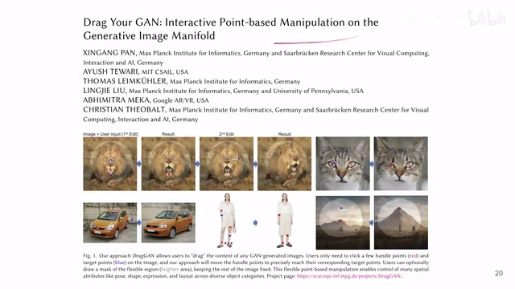
00:00:06–00:00:12 · 画面 002他呢就是通过一张图片，然后呢，你用户指定的一些点，你希望一些点从某一个位置移动到另一个位置啊，就是从这个红色位置移动到这个蓝色的位置，然后呢，这个网络就会帮助你编辑这张图像，让这个图像呢，你看逐渐的变成你想要的这个样子。那么同时呢，他也是支持这个 mask，就是你看到这边有一个这个浅色的这个圈吗？
00:00:12–00:01:06 · 画面 003
00:00:12–00:01:06 · 画面 003你可以通过这个 mask 来规定它只编辑这个圈里面的内容，而让这个圈外面的内容呢不去编辑。那么这个呢就是本文的效果。那么当然呢，在继续这个视频之前，我还是要说一下，我本身并不是从事这个图像编辑啊，甚至是生存式模型这方面的研究。我今天读这个论文呢只是了解一下这个方法，万一可能我在未来会用到这个方法，这也就意味着呢，你不能期望我在未来会很多的覆盖这个方向的内容。好的，那么我们直接开始。
00:01:06–00:02:55 · 画面 004
00:01:06–00:02:55 · 画面 004那么首先，DragGAN 的核心呢，是我们通过一定的手段在这个 manifold 之中游走。这个 manifold 在中文应该叫流形，我们可以想象的就是所有真实的图像，它们呢其实都可以映射在高维空间中的一个连续的你需要的一个条带也好，它的名字就叫 manifold 嘛。只有你这个样本在这个面上面，它才是一个真实的这么一个图像。
那现在呢，我们要实现这个图像的编辑，我们的假设呢就是我们相似的图像它在这个影空间里面，它在这个 latent space 它在这个 manifold 上面，它们的距离是相会比较靠近的。那么我们只需要根据用户的这个输入在我们的 manifold 上稍加调整，就可以把我们的这个图片给它编辑好。这个呢是本文的核心的思想。那么有了这个思路之后呢，我们就要看具体我们是用什么东西把这个 manifold 变成一张现实的图像。
或者说是我有一张现实的图像，怎么样把它弄回到这个 manifold 里面？那么本文依赖的是这个 StyleGAN2，确切的来说。那么具体来看，StyleGAN 的核心就是你的 manifold 在这里是一个，比如说尺寸是 512 的这么一个随机的变量，你通过 normalization，你通过一系列的全连接网络把它投影到一个 w那么这个 W 呢就是你生成图像过程中的那个 condition，你可以类比的把它理解成这个 latent diffusion 里面的那个 text prompt 这种各种 prompt 对吧？这种 conditioning 你可以看到它们的结构呢都是很像的对吧？所以说各种技术本来它们都不是一个平空出现的一个空中楼阁，你可以看到不同的技术分支之间它们的这个联系。
那说回到这个 style 干呢，这个 generator 就是 condition on 这个 noisecondition on 这些 style，然后呢，就把我们的最终的图片通过一个 block 一个 block 就把它生成出来了。那么当然这个是第一代的 style 干，第二代 style 干呢对这些模型的结构上有一些改进，但是本质上都是一样的。那么本文为了实现图像的编辑呢，它呢就是要通过 v2 的调整 w 来实现对我们整个生成图像的这个微小的这么一个编辑。
00:02:55–00:02:56 · 画面 005
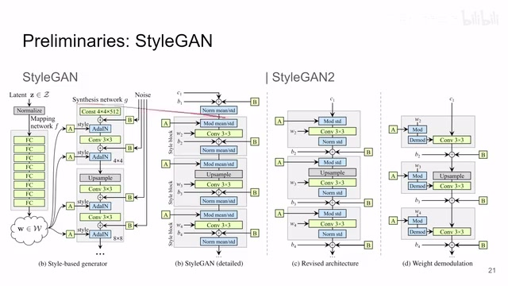
00:02:55–00:02:56 · 画面 00500:02:56–00:03:26 · 画面 006
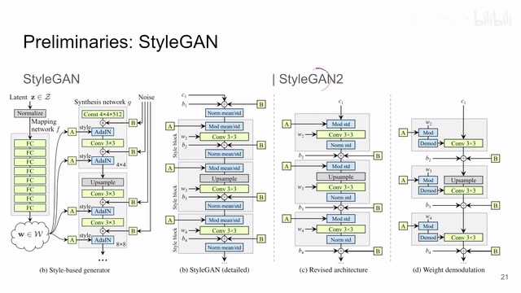
00:02:56–00:03:26 · 画面 006那么把我们的目标锁定之后呢，剩下的工作就非常简单了，就是我们怎么样把用户点的一个个点一个个拉动的这样一个动作给它变成一种相应的 loss，让它能够调整这个 w，使得这个图像呢发生相应的改变。那么我们直接来看。
00:03:26–00:03:27 · 画面 007
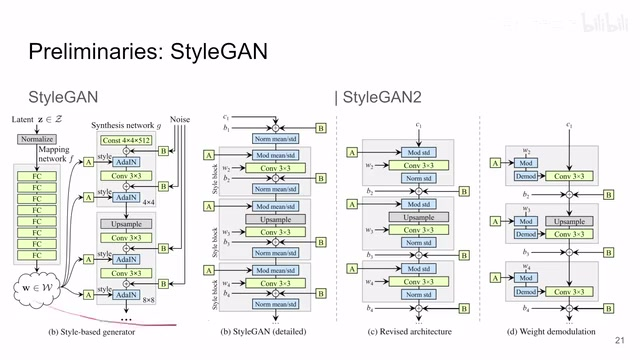
00:03:26–00:03:27 · 画面 00700:03:27–00:03:28 · 画面 008
00:03:27–00:03:28 · 画面 008那么本文的流程呢是这个 iterative，就是一开始我们的希望的起点和它的目标点它距离是比较远的，那么我们通过一次一次的迭代慢慢的把这个点去靠近到我们的目标点。比如说这里就显示了一次迭代，那么然后你不断的去迭代嘛，迭代很多次，最终达到你想要的效果。那么在每一次迭代中呢，其实发生了两个事情，第一个呢就是这个 motion supervision，那第二个呢是这个 point tracking。那么这两步做了什么事情呢，我们分别来看。
00:03:28–00:03:57 · 画面 009
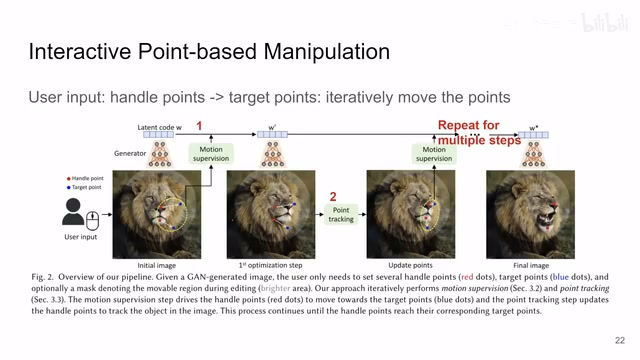
00:03:28–00:03:57 · 画面 00900:03:57–00:05:57 · 画面 010
00:03:57–00:05:57 · 画面 010首先是这个 motion supervision，它呢就是我们通过构造一种 loss，那这个 loss 呢使得我们去不断优化我们之前说的这个 latent code 也就是这个 w，优化它让它呢实现对图像的这个编辑。那么现在我们要关注的就是怎么把用户的这个输入的点变成 loss 就好了吗？那么首先呢，这里呢，作者说我们发现使用这个 generator 的 feature map 在第六个 block 之后的这个产生的这个 feature map，用它作为一个基底，我们在这个上面操作是最好的。那么当然这个时候，这个 feature map 它的图像大小肯定是不如原始的图像那么大的。
所以呢，就是用了这个双线性插值把它差值成这个最终图像的大小，这个都好说。那么 motion supervision 的核心呢，就是我们要优化这个 latent code，你把它理解成一个参数，我们需要学习它就可以了。正所谓林地生长于慢速墙外，但每一个沿袭诸使的人都知道慢速无墙。其实我说这句话并没有什么关系，只不过我是想说我们要通过修改这个 w。
让它代替我们在这个高维的这个 latent space 在这个 manifold 上进行一些细小的游走，一些细小的探索，来达到我们实现这个图像编辑的目的。然后现在它的监督信号呢，来自于我们 feature 中的这个操作，比如说我们知道对于每一个这个拖拽的操作，它都有一个起点就是红色的这个 P 和这个终点就是蓝色的这个 target。
那么我们希望我们最终选的这一块这个起点的位置呢，移动到这个 target 的这个位置。那么为了达到这个目的呢，我们就希望在这个 target 的位置周围的这个 feature 要跟我们现在这个位置上的这个 feature 要相似。那至于你移动过去之后，现在这个位置上 feature 长什么样子就无关紧要了。那么为了达成这个相似呢，作者就在这个 feature map 上我取两个区域，让他们的这个 L1 的 loss 相等就可以了。那具体来说呢，就是我这个 P 这个位置，我取了一个圆形的区域就是这个 Omega 1，它的这个半径是 R1，我沿着这个 P 这个位置周围取一块区域，然后呢，把这个区域对应的这个位置上的 feature 给它取出来，然后呢，现在呢。
00:05:57–00:06:54 · 画面 011
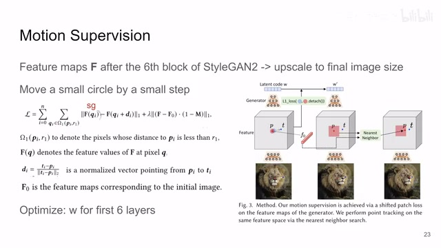
00:05:57–00:06:54 · 画面 011我沿着这个 P 点向 T 这个方向移动一个单位的长度。这个长度呢叫做 D你可以看到呢它就是这个朝向然后做了一下 Normalization对吧它就是一个单位的长度。那么移动到这个新的位置。你可以看到这个蓝色的小圈。那么现在呢这个位置就是我们要稍微移动这个 P 之后。我们中间斜角的一个位置。我们不能一次步子迈太大。对吧我们要慢慢的把这个 W 给它移动过去。
那我在这个蓝色的圈的周围取上这一块的 Tensor。那我最终希望呢是这个蓝色的这个圈里面的内容。变得跟红色的圈里面一样。所以呢作者这个 F1Loss 里面呢把这个红色圈内容的这个部分呢。把这个 Gradient 给它停掉就是它作为一个优化的目标。我只优化蓝色圈里面的这些 Tensor 的指值。那么还是我们之前说了。它用一个 F1Loss 计算一下。
那么优化呢也是只优化这个 Latent Code W
00:06:54–00:06:55 · 画面 012
00:06:54–00:06:55 · 画面 012这个呢是最主要的一项。
00:06:55–00:07:23 · 画面 013
00:06:55–00:07:23 · 画面 013当然呢作者还限制了一项。你可以看到它的它的这个网络是接受这个 Mask 的输入的。这个 Mask 的意味着就是。我被选中的区域之外的部分。我不想编辑那怎么实现这个呢。非常简单就是你看到有了这个 Mask 之后。我的这个所有的这个 Feature。跟原始的 Feature我希望它尽量的相近。也是用了这个 L1Loss那么这一项呢也加在里面那么这时候注意呢。
因为你是在取得第六个 Block 的这个 Feature。
00:07:23–00:07:24 · 画面 014
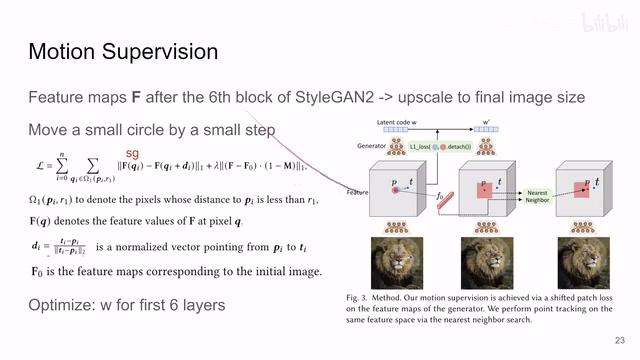
00:07:23–00:07:24 · 画面 01400:07:24–00:08:19 · 画面 015
00:07:24–00:08:19 · 画面 015所以你这一趟优化下来你只能是优化到前六层的 W 注意这里应该是 blocks 不是 layers 那么当然你有的配置里面前每个 block 它输入的 W 都有所区别这个都是不同的设计取舍了你可以根据情况来调整了那么这样一步下来我们就通过修改 W 让蓝色的部分变得像红色的部分变得像了一点那么这一部分叫做 motion supervision那么但是呢因为我们的优化的过程是随机的这么一个过程这一步究竟前进了多少这个事情是没有人能保证的没有人能说好的那么因此呢为了获得我具体前进部署的多少继续来说呢就是不断的跟踪我需要调整的这个点这个 P 点的位置我才能不断的去优化那不然我中间跑了一半比如说像这样对吧这个红点就落到其他位置上了我不应该是去调整其他的部分所以呢我们下一步呢就要去确定一下这个 P 点经过一次调整之后它去到了哪里那这一步呢作者叫这个 Point Tracking
00:08:19–00:08:42 · 画面 016
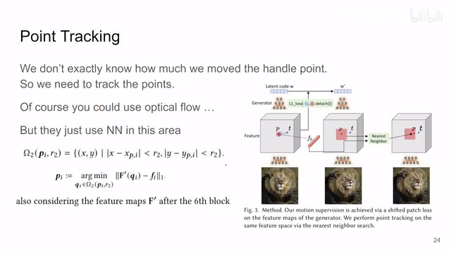
00:08:19–00:08:42 · 画面 016那作者的方法也很直接既然我们都已经用了这个 latent feature 了我们就指着他用到底就好了那他呢就在这个 P 点原始的这个 P 点周围取了这么一个方块那么在这个方块里面呢他计算所有的 representation 哪一个跟原始图像的这个 P 点的 representation 最相近那么最相近的那个位置呢就是你现在批点去的这个位置你也不需要有什么光流什么这些乱七八糟的东西了直接在这个 feature space 里面做一个最近林就好了嘛那么当然具体使用的时候呢你可以用任何一个 block 后面的这个 feature map 但是我看到它的代码里面默认的还是使用了这个第六个 block 之后的这个 feature map 那么解决完这一步之后呢你就相当于把这个批点的位置
00:08:42–00:08:43 · 画面 017
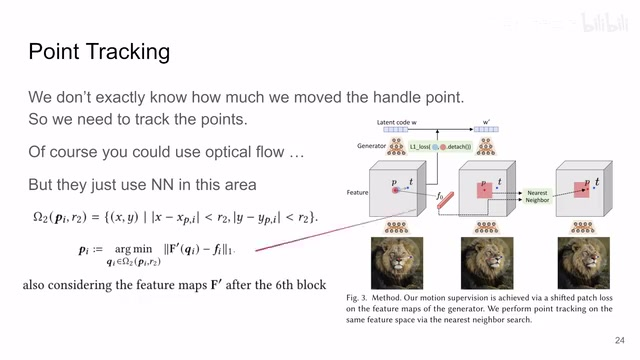
00:08:42–00:08:43 · 画面 01700:08:43–00:08:48 · 画面 018
00:08:43–00:08:48 · 画面 01800:08:48–00:08:51 · 画面 019
00:08:48–00:08:51 · 画面 01900:08:51–00:09:01 · 画面 020
00:08:51–00:09:01 · 画面 02000:09:01–00:09:06 · 画面 021
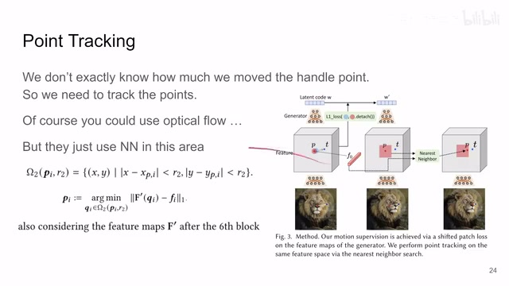
00:09:01–00:09:06 · 画面 021又刷新了一遍你重新的再做这个 motion supervision 直到你的这个点最终跟你的 target 差不多了啊他们的距离很近了不会再移动了那这个时候你把它的整个循环就结束了你的这个调整呢也就完成了那么以上呢就是本文核心的技术路线了从方法来看呢是非常直接的
00:09:06–00:09:18 · 画面 022
00:09:06–00:09:18 · 画面 02200:09:18–00:09:19 · 画面 023
00:09:18–00:09:19 · 画面 02300:09:19–00:09:23 · 画面 024
00:09:19–00:09:23 · 画面 024那么下面我们来看一些这个样例啊那对比一些其他的方法的一些效果本文的效果呢还是很明显的那这里有更多的例子比如说真实的图像我该怎么编辑对吧我这个图像我不是拿 GAN 生成的我怎么来知道它的这个 latent representation 是什么呢这个都不用担心有人研究过这个叫做 GAN inversion 就是给一个 pretrained 好的 GAN 给一张图像它能够帮你把这个图像生成的过程呢给它复原出来完事呢你就再去编辑就好了
00:09:23–00:09:30 · 画面 025
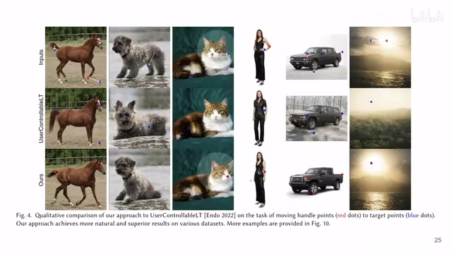
00:09:23–00:09:30 · 画面 02500:09:30–00:10:28 · 画面 026
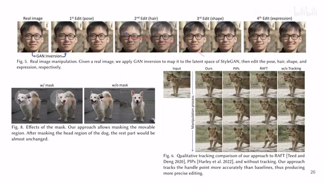
00:09:30–00:10:28 · 画面 026那这里呢一个 ablation 对吧有了 mask 之后它只编辑 mask 里面的部分没有 mask 之后呢就全图都可能会被编辑那么这边呢还有这个 tracking 的方法的比较还是感兴趣的朋友呢非常推荐你到原文去查看它的各种实验查看它的各种展示包括它的代码那么当然为了实现最好的效果作者还是每一类数据都训练一个干他并不是说一个模型去做很多类的当然这也不是作者需要解决的问题好了那么以上就是我对这个论文的一个快速的整理那么还是这个视频的目的只是了解这个方法我后面有很少的可能性会沿着这个方向继续研究那么感谢您的收看再见
00:10:28–00:10:29 · 画面 027
00:10:28–00:10:29 · 画面 027转写与来源说明 · 0 个自动复核提示
保留 74 个原始语音片段，0 个片段触发自动复核提示。提示仅用于定位可能的术语、重复或识别问题，不等于已确认错误。
讲解画面为源视频截图（640×360），不是可编辑 PPT 文件。全片按每秒 2 帧扫描内容变化，逐步展开页保留；连续动画保留代表画面。清晰度受源视频限制。
原视频：paper/合集_2026-10-16_内容生成/[论文速览]Drag Your GAN Interactive Point-based Manipulation...[2305.10973].mp4
SHA-256：96108f95920ef3083b1fc211fcdb07714cb249e06d33af3de1e90c7306d9b5cd
全文按视频语音与画面制作。原论文可从上方链接下载；完整资料包保留全文、原始逐字稿、字幕和校对记录。